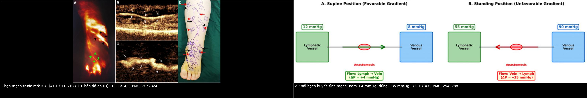
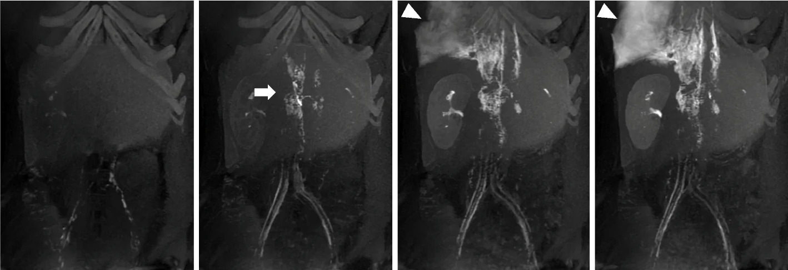
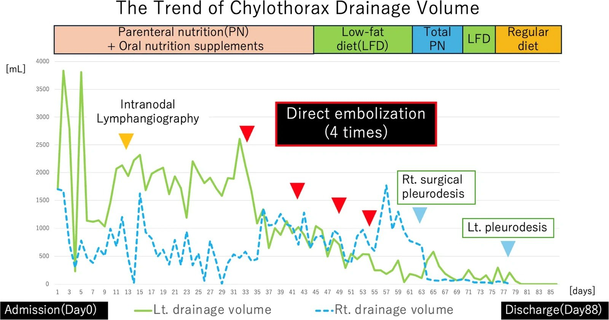
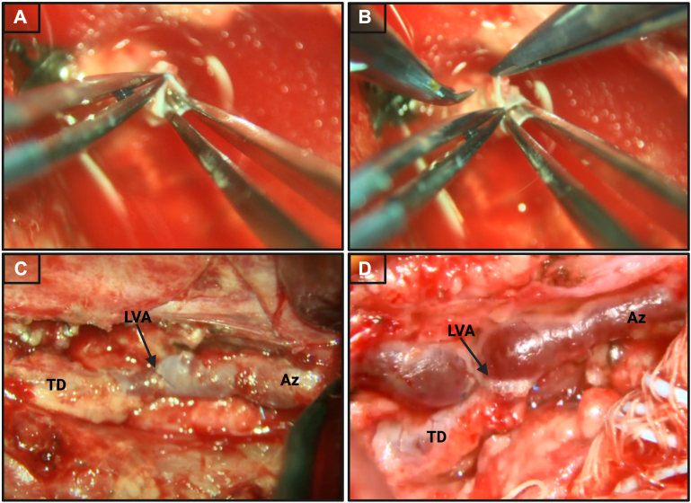

1855 — Khi DCMRL không có đích để nút: nối bạch huyết–tĩnh mạch (LVA) và chuyển hướng dòng ống ngực / Lymphovenous anastomosis and thoracic duct flow diversion after a non-targetable DCMRL
Tags: pattern:phu-bach-huyet pattern:ro-bach-huyet pattern:chylothorax vung:ong-nguc vung:chi-duoi anatomy:ong-nguc anatomy:cisterna-chyli protocol:ICG-lymphography protocol:lymphoscintigraphy protocol:CEUS protocol:DCMRL protocol:LVA score:ISL score:MDACC-ICG
Mức chắc chắn (certainty): tổng hợp y văn (literature synthesis) — tự biên từ tổng quan can thiệp bạch huyết 2 phần (PMC9892216, PMC9892215; CC BY-NC 4.0), tái thẩm định huyết động học của LVA chi dưới (PMC12942288, CC BY 4.0), nghiên cứu ICG + CEUS trước LVA ở 42 bệnh nhân (PMC12657324, CC BY 4.0), ca chylothorax do lymphoma thất bại với nút ống ngực rồi khỏi nhờ nút trực tiếp (PMC13627481, CC BY 4.0), loạt 8 trẻ nối ống ngực–tĩnh mạch azygos (PMC13100813, CC BY-NC-ND 4.0) và thuật toán điều trị phù bạch huyết sau ung thư vú (PMC13604093, CC BY 4.0). Không gắn một ca nguyên văn duy nhất của riêng bài.
Bài này là "nhánh B" của 1822 – DCMRL. 1822 trả lời rò ở đâu và có nút được không: trong 70 ca, chỉ 47,7% có giải phẫu can thiệp được qua da, và 90,3% trong số đó điều trị thành công, còn nhóm không thuận lợi chỉ đạt 62,5% (PMC11473261). Vậy 52,3% còn lại làm gì? Bài này trả lời đúng câu đó: nối bạch huyết–tĩnh mạch (lymphovenous anastomosis, LVA), nối ống ngực–tĩnh mạch azygos (thoracic duct-to-azygous LVA, TDA-LVA), nút trực tiếp ổ rò dưới CT khi ống ngực không phải nguồn, hoặc điều trị nguyên nhân áp lực — mỗi lựa chọn có điều kiện huyết động riêng, và chọn sai thì phù nặng hơn hoặc rò tăng gấp đôi.
Câu chốt: LVA không phải "cái van một chiều" — nó là một miệng nối không có van, đặt giữa hai khoang có áp lực đổi dấu theo tư thế. Nằm: bạch huyết 12 mmHg > tĩnh mạch 8 mmHg, dòng chảy đúng chiều (ΔP +4 mmHg). Đứng: tĩnh mạch mắt cá 90 mmHg > bạch huyết 55 mmHg, ΔP −35 mmHg — dòng đảo chiều, máu tĩnh mạch chảy ngược vào mạch bạch huyết (PMC12942288). Đây là lý do hở miệng nối 64% sau 2 năm và 75% → 36% từ 12 đến 24 tháng, dù 70–80% bệnh nhân vẫn cải thiện lâm sàng. Và với ống ngực: nối vào azygos chỉ cứu được người có áp lực tĩnh mạch trung tâm bình thường — ở Fontan hay tắc tĩnh mạch chủ trên, azygos cũng là hệ áp lực cao, nối vào không giải áp được gì (PMC13100813).
1. Tổng quan bệnh học – cơ chế hình ảnh
- Hệ bạch huyết là hệ "trả nước" của cơ thể: mỗi ngày 8–12 L dịch kẽ được đưa trở lại tuần hoàn, phần lớn qua ống ngực (PMC9892216). Khi lưu lượng sinh ra > khả năng dẫn lưu (tắc ống ngực, suy bơm bạch huyết, áp lực tĩnh mạch trung tâm cao), dịch ứ ở mô kẽ (phù) hoặc thoát ra khoang thanh mạc (rò dưỡng trấp — chylothorax, chylous ascites).
- Vì sao chọn ICG để "nhìn" mạch: indocyanine green gắn albumin, tiêm dưới da rồi chụp huỳnh quang hồng ngoại — protein–thuốc bị giữ lại trong lòng mạch bạch huyết nên mạch sáng thành đường. Giới hạn vật lý quan trọng: độ xuyên sâu chỉ 5–10 mm (cá biệt tới 2 cm), nên ở chi dày/xơ hóa, ICG không thấy mạch nằm sâu — đó là lý do phải thêm siêu âm cản quang (contrast-enhanced ultrasound, CEUS) với vi bọt khí: trong 42 bệnh nhân, CEUS định vị được mạch 95%, và ca mổ ngắn hơn 78 phút (320 ± 124 vs 398 ± 93 phút, p < 0,001) (PMC12657324).
- Vì sao DCMRL thấy rò mà ICG không thấy: gadolinium pha loãng tiêm vào hạch bẹn rút ngắn T1 của nước trong bạch huyết → mạch tăng tín hiệu trên T1 3D fat-sat, chụp lặp mỗi 30–60 giây cho bản đồ dòng theo thời gian; mỡ bị dập nên dịch bạch huyết nổi bật. Đây là chuỗi động, không phải T2 hình thái — chỉ chuỗi động mới trả lời "thuốc thoát ra chỗ nào" (1822).
- TẠI SAO LVA chạy được — và tại sao nó hay hỏng: miệng nối bạch huyết–tĩnh mạch không có van, nên chiều dòng do chênh áp quyết định. Cột thủy tĩnh từ mắt cá tới tim cao ~120 cm, tạo áp lực tĩnh mạch mắt cá 80–100 mmHg khi đứng; áp lực bạch huyết chỉ tăng tới ~55 mmHg vì dòng bị chia đốt bởi van. Kết quả: nằm ΔP +4 mmHg (lymph → vein), đứng ΔP −35 mmHg (vein → lymph) (PMC12942288). Đây là cơ chế vật lý của "hở muộn", không phải lỗi kỹ thuật đơn thuần.
- Ngưỡng định lượng của kết cục LVA: thành công lâm sàng 70–80% ở trung tâm lớn; nhưng hở miệng nối 64% sau 2 năm, thông 75% ở 12 tháng → 36% ở 24 tháng; giảm thể tích chi 600 ± 969 mL (còn thông) vs 420 ± 874 mL (đã tắc) — khác biệt không có ý nghĩa (PMC12942288). Nghĩa là: đừng hứa với bệnh nhân dựa vào "miệng nối còn thông"; hãy theo dõi thể tích chi, số đợt viêm mô tế bào, chất lượng sống.
- TẠI SAO nối ống ngực vào azygos lại khác nối chi: ống ngực bị tắc làm áp lực trong hệ bạch huyết tăng, gây anasarca, tràn dịch, suy hô hấp. Nối ống ngực xuống tĩnh mạch azygos tạo một cửa thoát dự phòng — nhưng azygos đổ vào tĩnh mạch chủ trên, nên nếu áp lực trung tâm đã cao (Fontan, hẹp/tắc SVC) thì "cửa thoát" này cũng bị chặn (PMC13100813).
2. Mẫu hình + chẩn đoán phân biệt theo vị trí (gamut)
- Phù chi (lymphedema) — theo giai đoạn ISL: I phù mềm, nâng chi là hết; II phù không hết khi nâng chi; III xơ–mỡ, thay đổi nuôi dưỡng da (PMC13604093). LVA chỉ có ý nghĩa khi còn mạch bạch huyết ngoại vi để nối — trên phân độ MD Anderson bằng ICG (0–5), giai đoạn 3 đã "ít mạch thông + trào ngược da lan rộng", giai đoạn 5 là không còn mạch, không di chuyển thuốc, không co bóp → nối vào đâu?
- Rò dưỡng trấp trung tâm (chylothorax, chylous ascites, chylopericardium): tìm điểm rò trên DCMRL/chụp bạch huyết; nếu ống ngực là nguồn → nút ống ngực (thoracic duct embolization, TDE); nếu ổ rò không nằm ở ống ngực (u lymphoma co nhỏ để lại sẹo rò, dị dạng bạch huyết khu trú) → nút trực tiếp dưới CT.
- Rối loạn dòng bạch huyết trung tâm (central conducting lymphatic anomaly, CCLA): dòng ngược chiều, ứ trong ngực/bụng, thường kèm tràn dịch nhiều khoang; nhóm này là "đất" của TDA-LVA và của điều trị nguyên nhân áp lực, không phải của LVA chi.
- Gamut theo "không có đích để nút" — 4 khả năng, đừng gộp làm một: (1) không có đường vào ống ngực (kỹ thuật thất bại 37% — PMC9892215); (2) rò ngoài ống ngực (đa ổ, do u, do dị dạng); (3) rò dưới hoành (chylous ascites — nút ống ngực làm nặng hơn); (4) nguyên nhân là áp lực tĩnh mạch trung tâm cao (Fontan, SVC) — can thiệp bạch huyết đơn thuần không chữa được.
- Mnemonic "Lymph–Vein chạy được khi 3 điều kiện": Lưu lượng còn (mạch còn thông), Venous pressure thấp (không tăng áp trung tâm), Chênh áp đúng chiều (nằm là chính).
3. Bảng so sánh phân biệt (ma trận đối chiếu)
| Thực thể (entity) | Hình ảnh điển hình | Chốt vào (rule-in) | Chốt loại (rule-out) | Gợi ý xác nhận |
|---|---|---|---|---|
| LVA ngoại vi (lymphaticovenous anastomosis) | ICG thấy mạch tuyến tính liên tục tới gần chỗ nối; CEUS thấy lòng mạch ≥ 0,5 mm và đo được độ sâu | Còn mạch thông ngoại vi (ICG/CEUS) + phù ISL I–II + chưa xơ hóa | MD Anderson ICG 4–5 (không mạch, không co bóp) hoặc chi đã xơ cứng → nối sẽ tắc ngay | ICG + CEUS trước mổ; đo thể tích chi làm mốc |
| TDA-LVA (nối ống ngực – tĩnh mạch azygos) | Ống ngực tắc/không đổ được vào góc tĩnh mạch; DCMRL thấy ứ trung tâm, không có đường thoát | Tắc ống ngực + áp lực tĩnh mạch trung tâm BÌNH THƯỜNG + thất bại/không khả thi TDE | Fontan, hẹp/tắc SVC, tăng áp phổi nặng → azygos cũng áp lực cao, nối vô ích (PMC13100813) | Siêu âm tim/áp lực CVP trước mổ; chụp bạch huyết kiểm tra sau mổ |
| TDE (nút ống ngực) | Ống ngực giãn, thoát thuốc trực tiếp vào khoang màng phổi; ống ngực là nguồn duy nhất | Rò dưỡng trấp ngực + ống ngực là nguồn + đặt được catheter | Rò dưới hoành (chylous ascites) → nút làm nặng cổ trướng; không định vị được chỗ rò → nút mù làm nặng rò | Chụp bạch huyết qua hạch bẹn; DCMRL; đo lưu lượng dẫn lưu 24 giờ |
| Nút trực tiếp ổ rò dưới CT (direct embolization) | DCMRL thấy một ổ rò khu trú từ khối u/sẹo; ống ngực bình thường hoặc đã nút thất bại | Ổ rò khu trú nhìn thấy + tiếp cận được bằng kim dưới CT | Rò lan tỏa nhiều ổ, không thấy đích → không có gì để bơm | CT dẫn đường + NBCA:iodized oil 1:2 (PMC13627481) |
| Điều trị bảo tồn / nguyên nhân (LFD, MCT, TPN, octreotide; fenestration) | Không có hình ảnh đặc hiệu; lưu lượng dẫn lưu giảm dần theo ngày | Lưu lượng thấp, ổn định, bệnh nhân chịu được — và luôn là bước đầu | Lưu lượng không giảm sau 1–2 tuần hoặc tăng → phải can thiệp | Bảng lưu lượng 24 giờ; albumin, điện giải, lymphocyte |

Trái (A–D): ICG huỳnh quang, CEUS mặt cắt dọc mạch, và bản đồ da đánh dấu hai phương thức. Phải: áp lực hai bên miệng nối ở tư thế nằm (ΔP +4 mmHg) và đứng (ΔP −35 mmHg). Nguồn: PMC12657324 và PMC12942288, CC BY 4.0; ghép letterbox, không crop.
Ba con số quyết định "nối hay không nối"
- 63,1%: tỷ lệ đặt được catheter vào ống ngực trong các loạt TDE; khi đã đặt được, thành công lâm sàng 90–92% (PMC9892215). Nói cách khác: thất bại kỹ thuật là chuyện thường, không phải biến cố — phải có phương án B.
- 47,7% → 62,5%: tỷ lệ ca DCMRL có giải phẫu can thiệp được, và tỷ lệ thành công khi giải phẫu không thuận lợi (PMC11473261 qua 1822). Nhóm 62,5% này chính là chỉ định của LVA/TDA-LVA.
- 75% → 36%: thông miệng nối LVA chi dưới từ 12 đến 24 tháng (PMC12942288) — dùng để tư vấn trước mổ, không dùng để đánh giá thành công.
4. Protocol + hệ phân độ / điểm chuẩn hóa
- Bước 1 — xác định "có đích hay không": DCMRL (tiêm gadolinium pha loãng vào hạch bẹn hai bên, chuỗi 3D T1 fat-sat lặp mỗi 30–60 giây, theo 1822). Trả lời 3 câu: ống ngực có hiện hình? rò ở đoạn nào? có đường qua da không?
- Bước 2 — đo lưu lượng trước khi can thiệp: đặt dẫn lưu, ghi mL/24 giờ mỗi ngày. Đây là biến số theo dõi chính; một ca dưỡng trấp hai bên dao động 3.800 mL/ngày xuống 0 mL trong 88 ngày (PMC13627481).
- Bước 3 — chọn kỹ thuật theo bảng: TDE nếu ống ngực là nguồn; nút trực tiếp dưới CT nếu ổ rò khu trú; TDA-LVA nếu ống ngực tắc và CVP bình thường; LVA chi nếu phù ngoại vi còn mạch thông.
- Bước 4 — chuẩn bị mổ LVA: ICG + CEUS (không chỉ ICG), đánh dấu vị trí và độ sâu mạch; dự kiến 1–3 miệng nối; dự phòng 78 phút chênh lệch thời gian mổ nếu chỉ dùng ICG (PMC12657324).
- Bước 5 — theo dõi sau nối: lưu lượng dẫn lưu (ngực/bụng/chi), thể tích chi, số đợt viêm mô tế bào, albumin/điện giải; siêu âm tim/áp lực CVP nếu nghi tăng áp trung tâm. Không có ngưỡng "khô" được đồng thuận — trong loạt TDA-LVA ở trẻ, lưu lượng ống ngực tuần đầu sau mổ là 15 mL/ngày (IQR 9–37) và đó là mốc thực dụng để cân nhắc rút dẫn lưu (PMC13100813).
- Hệ phân độ dùng trong bài: ISL I–III cho phù chi; MD Anderson ICG 0–5 cho mức còn mạch; CCLA cho rối loạn dòng trung tâm (1822).
flowchart TD
A[Phù chi hoặc rò dưỡng trấp] --> B[DCMRL + ICG/CEUS]
B --> C{Có đích can thiệp qua da?}
C -->|Có, ống ngực là nguồn| D[TDE]
C -->|Có, ổ rò khu trú ngoài ống ngực| E[Nút trực tiếp dưới CT]
C -->|Không| F{Áp lực tĩnh mạch trung tâm bình thường?}
F -->|Không: Fontan, tắc SVC| G[Điều trị nguyên nhân áp lực: fenestration, stent, tối ưu tim mạch]
F -->|Có| H{Ống ngực tắc và không đặt được catheter?}
H -->|Có| I[TDA-LVA: nối ống ngực – tĩnh mạch azygos]
H -->|Không, phù chi còn mạch thông| J[LVA ngoại vi 1–3 miệng nối]
H -->|Không, mất mạch ngoại vi| K[Bảo tồn + ghép hạch bạch huyết có cuống mạch]
D --> L[Theo dõi lưu lượng 24 giờ + thể tích chi]
E --> L
I --> L
J --> L
L --> M{Lưu lượng giảm và ổn định?}
M -->|Không| B
M -->|Có| N[Rút dẫn lưu khi lưu lượng thấp ổn định]
5. Biến thể bình thường và cạm bẫy
- Nút ống ngực khi chưa xác định được chỗ rò = làm bệnh nặng hơn. Ca nguyên văn: nam 53 tuổi, lymphoma B độ ác thấp, chylothorax hai bên ở chu kỳ 2 bendamustine; chụp bạch huyết qua hạch 2 lần không thấy chỗ rò, vẫn nút ống ngực bằng NBCA qua góc tĩnh mạch trái ở tuyến trước → tràn dưỡng trấp nặng lên rõ rệt, phải dẫn lưu hai bên; DCMRL sau đó mới thấy rò từ sẹo u đã co nhỏ; 4 lần nút trực tiếp dưới CT + pleurodesis hai bên → khô, ra viện ngày 88 (PMC13627481). Cơ chế: nút ống ngực tăng áp lực ngược dòng trong khi ổ rò vẫn mở.
- Nút ống ngực trong chylous ascites "làm nặng cổ trướng" vì ống ngực là đường thoát duy nhất của dịch dưới hoành; tương tự, nút ống ngực ở người rò dưới cơ hoành có thể đẩy dịch lên ngực. Luôn hỏi: rò ở trên hay dưới cơ hoành? (PMC9892215).
- Đo "miệng nối còn thông" khi bệnh nhân nằm là đo trong điều kiện thuận lợi nhất — ICG kiểm tra thông thường được làm ở tư thế nằm, nơi ΔP +4 mmHg; đứng lên ΔP −35 mmHg. Đừng đồng nhất "thông trên bàn" với "hoạt động được cả ngày" (PMC12942288).
- Nhầm phù do tim/thận với phù bạch huyết: phù bạch huyết thường một bên, không đau, mu bàn chân dày (dấu Stemmer), không lõm; phù tim/thận hai bên, lõm, kèm triệu chứng toàn thân. LVA ở bệnh nhân phù do tim là can thiệp sai đích.
- TDA-LVA ở trẻ Fontan/suy tim một thất: nối vào azygos không hạ được áp lực hệ thống; nhóm này cần giảm áp lực tĩnh mạch (fenestration, stent, tối ưu huyết động), không phải thêm miệng nối. Đây là chốt loại mạnh nhất trong ma trận (PMC13100813).
- Cạm bẫy "rò đã khô" khi bệnh nhân nhịn ăn: lưu lượng giảm vì không có mỡ vào ruột, không phải vì rò đã liền; phải đánh giá lại sau khi ăn lại chất béo trước khi rút dẫn lưu.
6. Tự lượng giá — Blind Quiz
Ca 1 — Nam 53 tuổi, lymphoma B, tràn dưỡng trấp hai bên, đã nút ống ngực ở nơi khác và nặng hơn. Nhìn 4 khung DCMRL theo thời gian.

- Gợi ý: không có khối u lớn, chỉ còn sẹo lymphoma đã co; ống ngực đã bị nút bằng NBCA.
- Câu hỏi: (1) ổ rò nằm ở đâu? (2) Vì sao nút ống ngực không giải quyết được? (3) Bước tiếp theo là gì?
Bấm để hiện đáp án (findings + chẩn đoán)
- Findings: các khung MIP thì sớm cho thấy thuốc tập trung ở bạch mạch thắt lưng/cạnh động mạch chủ, sau đó thoát thành dòng lớn vào khoang màng phổi phải từ vùng sẹo u lymphoma (mũi tên tam giác) — tức ổ rò không nằm ở ống ngực mà ở bạch mạch quanh u.
- Chẩn đoán: rò dưỡng trấp từ sẹo u lymphoma, đa ổ/khó định vị; nút ống ngực chỉ chặn đường thoát chính, tăng áp lực ngược dòng và làm rò nặng thêm.
- Xử trí: DCMRL định vị → nút trực tiếp ổ rò dưới CT bằng NBCA:iodized oil 1:2, lặp 4 lần, kèm pleurodesis hai bên; lưu lượng về 0, ra viện ngày 88.
- Nguồn: CVIR Endovasc 2026 (PMC13627481), CC BY 4.0.
Ca 2 — Cùng bệnh nhân. Đọc biểu đồ lưu lượng dẫn lưu 88 ngày.

- Gợi ý: trục dọc là mL/ngày, trục ngang là ngày; mũi tên đỏ là các lần nút trực tiếp.
- Câu hỏi: (1) Lưu lượng đỉnh là bao nhiêu? (2) Dấu hiệu nào chứng minh TDE thất bại? (3) Khi nào có thể nói "khô"?
Bấm để hiện đáp án (findings + chẩn đoán)
- Findings: đỉnh ~3.800 mL/ngày ở cả hai bên trong tuần đầu; sau nút ống ngực không giảm (đường xanh vẫn 2.000–2.600 mL/ngày); 4 lần nút trực tiếp (mũi tên đỏ, ngày 37–55) tạo bậc thang giảm rõ; sau pleurodesis phải (ngày 63) và trái (ngày 77), lưu lượng về 0 quanh ngày 80.
- Chẩn đoán: rò dưỡng trấp kháng trị do lymphoma, đáp ứng với nút trực tiếp + pleurodesis, không đáp ứng TDE.
- Nguyên tắc: "khô" = lưu lượng thấp ổn định qua nhiều ngày sau khi ăn lại, không phải một ngày lẻ tụt xuống; phải xem xu hướng chứ không xem một con số.
- Nguồn: CVIR Endovasc 2026 (PMC13627481), CC BY 4.0.
Ca 3 — Sơ đồ mổ: ống ngực (TD) nối tận–bên vào tĩnh mạch azygos (Az).

- Gợi ý: bệnh nhi nằm viện dài ngày, phù toàn thân, thở máy, ống ngực tắc không đặt được catheter.
- Câu hỏi: (1) Miệng nối này giải áp theo đường nào? (2) Bệnh nhân nào không được hưởng lợi? (3) Kết quả sớm của loạt này?
Bấm để hiện đáp án (findings + chẩn đoán)
- Cơ chế: đưa bạch huyết từ ống ngực xuống tĩnh mạch azygos, rồi về tĩnh mạch chủ trên — tạo "van xả" khi ống ngực bị tắc.
- Không được hưởng lợi: người có áp lực tĩnh mạch trung tâm cao (Fontan/suy tim một thất, hẹp–tắc SVC) vì azygos cũng nằm trong hệ áp lực cao; nối vào không hạ được áp lực.
- Kết quả: 8 trẻ sơ sinh/nhũ nhi, tạo được miệng nối 100%, 6/8 (75%) thành công lâm sàng, thông miệng nối 62,5% (5/8) sau > 2 tháng; lưu lượng ống ngực tuần đầu 15 mL/ngày (9–37); thời gian mổ trung vị 318 phút; 1/8 phải rửa khoang màng phổi.
- Nguồn: Ann Thorac Surg Short Rep 2026 (PMC13100813), CC BY-NC-ND 4.0 — ảnh nguyên bản, không crop/ghép.
Bài liên quan chéo
- 1822 – DCMRL: kỹ thuật, cách đọc và khi nào nút ống ngực — "nhánh A": tìm đích can thiệp
- 1858 – VLNT khi LVA không còn mạch: chọn vùng cho/nhận & bản đồ ngược — "nhánh B": cấy hạch khi hết kênh
- 1839 – Chylothorax sau cắt/ghép gan — ngưỡng triglyceride dịch và bước điều trị
- 1823 – Trametinib trong bất thường dẫn lưu bạch huyết trung tâm — điều trị nội khoa CCLA
- 1808 – Sirolimus trong dị dạng bạch huyết
- 077 – Gorham–Stout / GLA và 076 – Chyluria
- 901 – Tổng quan can thiệp: an toàn và đáp ứng
Không dùng để chẩn đoán độc lập khi chưa có người hướng dẫn.